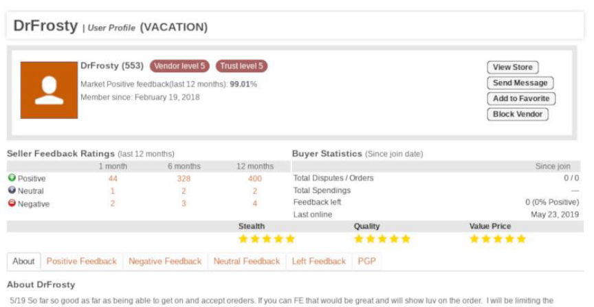
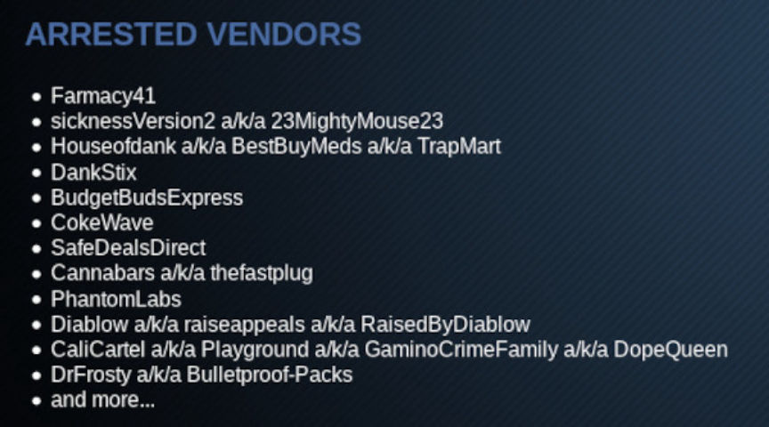
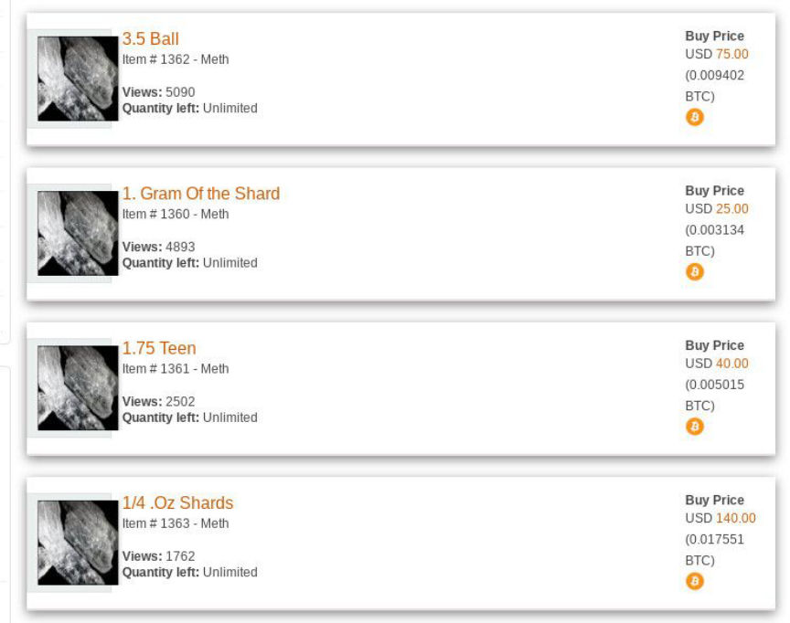
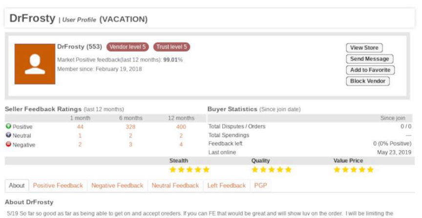
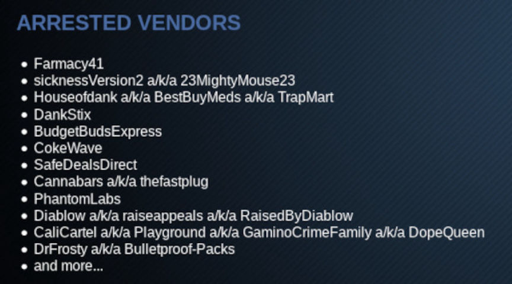
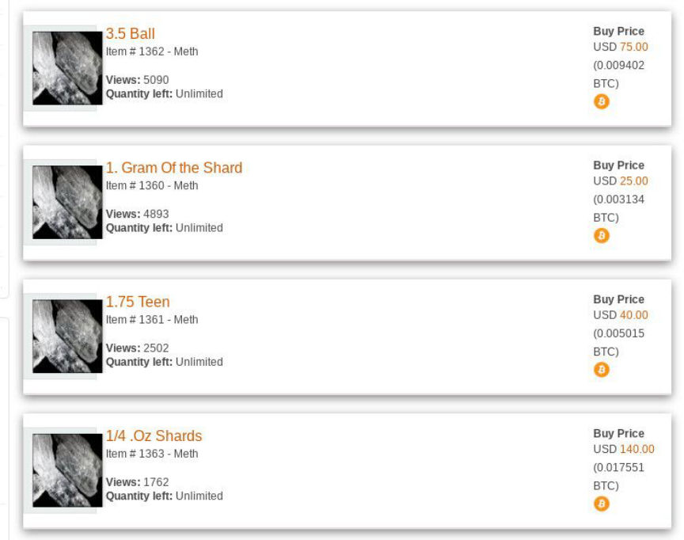

Darkweb Vendor "DrFrosty" Indicted for Methamphetamine Distribution
Federal law enforcement in California arrested a man suspected of selling methamphetamine on numerous darkweb marketplaces under the username “DrFrosty.” A grand jury recently returned a five count indictment against the suspect in connection with crimes committed through Dream Market, Empire Market, and Silk Road 3.1.

Only one day after Darknetlive reported the existence of the onion service owned by the Northern California Illicit Digital Economy (NCIDE) Task Force that contained a list of darkweb vendors investigated by the Task Force, U.S. Attorney McGregor W. Scott announced the indictment of one of the vendors on the very same list.

The United States Attorney, in an announcement from the U.S. Attorney’s Office of the Eastern District of California, said that a federal grand jury had indicted Omar Isho, 37, with five counts of distributing methamphetamine and possession with intent to distribute methamphetamine.
According to the indictment, Isho had been selling methamphetamine on Dream Market, Silk Road 3.1, Empire Market, and other marketplaces at the time of his arrest. In this case, federal agents conducted undercover purchases of DrFrosty’s product, traced the packages back to the origin, and identified Isho by examining surveilance footage and matching the footage with records kept by the United States Postal Service.

The Northern California Illicit Digital Economy (NCIDE) Task Force is a multiagency taskforce composed of law enforcement agents from the United States Postal Inspection Service; Homeland Security Investigations; the Federal Bureau of Investigations; and the Drug Enforcement Administration.
Although the list published by the Task Force included many darkweb vendors caught during Operation Dark Gold or Darkness Falls, it also included names never mentioned in an official announcement. Similar cases are likely to follow.
Source: DOJ
DrFrosty Detention Order: PDF

DrFrosty Empire Market
Only one day after Darknetlive reported the existence of the onion service owned by the Northern California Illicit Digital Economy (NCIDE) Task Force that contained a list of darkweb vendors investigated by the Task Force, U.S. Attorney McGregor W. Scott announced the indictment of one of the vendors on the very same list.

The NCIDE List of Arrested Vendors
The United States Attorney, in an announcement from the U.S. Attorney’s Office of the Eastern District of California, said that a federal grand jury had indicted Omar Isho, 37, with five counts of distributing methamphetamine and possession with intent to distribute methamphetamine.
According to the indictment, Isho had been selling methamphetamine on Dream Market, Silk Road 3.1, Empire Market, and other marketplaces at the time of his arrest. In this case, federal agents conducted undercover purchases of DrFrosty’s product, traced the packages back to the origin, and identified Isho by examining surveilance footage and matching the footage with records kept by the United States Postal Service.

DrFrosty Empire Listings
The Northern California Illicit Digital Economy (NCIDE) Task Force is a multiagency taskforce composed of law enforcement agents from the United States Postal Inspection Service; Homeland Security Investigations; the Federal Bureau of Investigations; and the Drug Enforcement Administration.
Although the list published by the Task Force included many darkweb vendors caught during Operation Dark Gold or Darkness Falls, it also included names never mentioned in an official announcement. Similar cases are likely to follow.
Source: DOJ
DrFrosty Detention Order: PDF